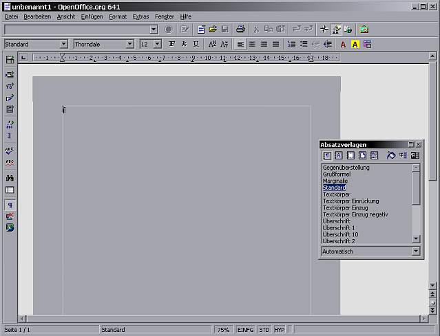
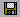
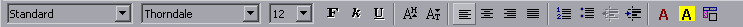
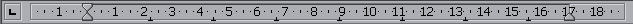
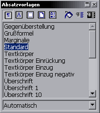
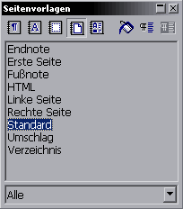
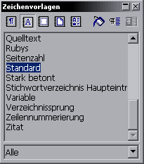

| [zurück] | [Hauptmenü] |
[weiter] |
OpenOffice.org Textdokument
01 - grundlegende Bedienelemente
Die folgenden Absätze stellen die grundlegenden
Bedienelemente des OpenOffice.org Textverarbeitungsprogrammes
vor.
Hauptfenster
|  |
| Abb. 1: OpenOffice.org's
Textverarbeitungsprogramm nach dem Start |
Hier in Abb.1 sehen Sie das
Hauptfenster des Textverarbeitungsprogrammes von
OpenOffice.org. Es finden sich hier nützliche und auch
für OpenOffice.org charakteristische Bedienelemente
wieder. Zuersteinmal richte ich das Augenmerk auf die
Menüleiste:
Menü
| |
| Abb. 2: OpenOffice.org's Menüzeile |
Hier in der Menüleiste lassen sich alle Befehle finden,
wird aber wegen der effizienten Symbolleisten eher selten
gebraucht. Sie passt sich an die momentane Arbeitsumgebung
an; d.h. dass sie z.B. im Tabellenkalkulationsprogramm
andere Einträge hat als hier, weil ja auch die Programme
ein ganz anderes Funktionsspektrum haben!
Wichtige Einträge sind:
- Datei: hier finden sich Unterpunkte für das Öffnen und Schließen, sowie Speichern und Drucken von Dokumenten sowie andere grundlegende Funktionen
- Bearbeiten: Einträge für das Editieren (Ausschneiden, Kopieren, Einfügen) von Text, Suchen, ...
- Ansicht: Ansichtsoptionen, Symbolleisten ein- und ausblenden, ...
- Einfügen: für das Einfügen von Objekten, Sonderzeichen, erzwungenen Seitenumbrüchen, ...
- Format: Formatierungsoptionen für Schrift, Absatz, ...
- Extras: Rechtschreibung, Optionen, ...
- Fenster: Steuerung der Fenster
- Hilfe: selbsterklärend!
Funktionsleiste
| |
| Abb. 3: OpenOffice.org's
Funktionsleiste |
Das ist die Funktionsleiste. Sie ist für die grundlegendsten Funktionen verantwortlich.
- Das Symbol für das Erstellen eines neuen Dokumentes
- Das Symbol rechts davon für das Öffnen eines gespeicherten Dokumentes
- Das Diskettensymbol  zum Speichern (ist dann aktiv, wenn es eine zu speichernde Veränderung gibt)
- Das Drucksymbol zum Drucken (hier direkt, im Menü gibt es einen Dialog für das Auswählen des Druckers - diese Einstellung wird dann für jedes Dokument getrennt gespeichert)
- Textbearbeitung: Ausschneiden, Kopieren, Einfügen (beim Einfügen mehrere Optionen, je nach dem ob man die Formatierungen mit übernehmen will oder nur den reinen Text einfügen möchte!)
- Die nächsten Symbole machen ungewollte Schritte rückgängig (oder stellen sie dann doch wieder her)
- Die 4 letzten Symbole sind für spezielle Fenster (Stylist , Navigator, Hyperlink und Gallery) zuständig.
Werkzeugleiste
| |
Das ist die Werkzeugleiste. Sie
enthält viele Tools, die man bei
alltäglicher Verwendung benötigt. Jedes mit
einem kleinen grünen Pfeil bezeichnete Symbol
hat zusätzlich eine kleine fliegende
Symbolleiste, die sich bei etwas längerem
Mausklick öffnet. Hier kann man die
gewünschte Funktion wählen oder sogar die
gesamte kleine Symbolleiste herausziehen, falls man
eine Funktion öfters benötigt!
|
| Abb. 3:
Werkzeugleiste |
|
Objektleiste(n)
|  |
| Abb. 4: Objektleiste |
Die Objektleiste ist für spezielle Formatierungsoptionen
zuständig. Links beginnend mit Absatzvorlagen (dazu bei
dem Stylisten mehr)
über Schriftart, Größe, Schnitt, Ausrichtung
und Einfügen von Listenelementen
(nummeriert oder mit Punkten) und Einzüge.
Weiters ist es wichtig zu wissen, dass sich diese Zeile der jeweiligen Umgebung anpasst. Das soll heißen, dass, wenn man z.B. innerhalb einer Tabelle oder einer Auflistung ist, sich zusätzlich zu dieser Leiste eine andere gesellt. Es kann über das blaue Dreieck (ganz rechts) zwischen den jeweiligen Objektleisten gewechselt werden.
Weiters ist es wichtig zu wissen, dass sich diese Zeile der jeweiligen Umgebung anpasst. Das soll heißen, dass, wenn man z.B. innerhalb einer Tabelle oder einer Auflistung ist, sich zusätzlich zu dieser Leiste eine andere gesellt. Es kann über das blaue Dreieck (ganz rechts) zwischen den jeweiligen Objektleisten gewechselt werden.
|
| Abb. 5: alternative
Objektleisten |
Diese alternativen Objektleisten Abb. 5 beinhalten teilweise
ähnliche oder gänzlich andere Funktionen. Die
Gliederungssymbolleiste hilft beim Erstellen und Ordnen von
Gliederungen ,
deren Formatierung und fügt Absätze ohne
Gliederungsnummer ein . Die Tabellensymbolleiste hilft beim Erstellen von
Tabellen ,
löscht Spalten oder Zeilen, ändert Ränder
uvm.
Lineal
|  |
| Abb. 6: Lineal |
Das Lineal Abb. 6 erfüllt den
Zweck, die linken und rechten Seitenränder festlegen zu
können und die Einzüge des momentan unter dem
Cursor befindlichen Absatzes einzustellen. Außerdem ist
das Zeichen im linken Quadrat für die Tabulatoren
zuständig, dazu aber später mehr. Damit lässt
sich unter anderem ein optisch ansprechendes Design des
Dokumentes erzielen, was die Strukturierung und Lesbarkeit
verbessert!
Stylist
|  |  |  |
| Abb. 7: Stylist |
||
Der Stylist ist das zentrale Werkzeug, um ein Dokument
ansprechend zu formatieren. Er wird über die Funktionsleiste (Button rechts), die
F11 Taste auf der Tastatur oder über das Menü (Format>Stylist) aufgerufen.
Genauso wie bei der Objektleiste
hat auch er je nach benötigter Funktion verschiedene
Gesichter. Besonders wichtig ist die
Absatzformatierung, aber auch die Zeichen-
und Seitenformatierung - weiters steht eine
Listen- und Objektformatierung zur
Verfügung. Die anderen Symbole dienen dem Erstellen und
Zuweisen von Vorlagen. Weiters lässt sich unten
über das Auswahlmenü die Liste aller vorhandenen
Vorlagen sinnvoll filtern.
benutzerdefinierte Symbolleisten
Ist Ihnen vielleicht aufgefallen, dass auf der Objekt-Symbolleiste 2 Symbole zu sehen
waren, die nicht bei Ihnen sind? Diese beiden Symbole dienen
dem Hoch- und Tiefstellen von Text, was ich bei häufiger
Verwendung auf diese Art schnell im Zugiff habe.
Es ist so, dass die Symbolleisten nicht starr vorgegeben
sind, sondern individuell angepasst werden können.
Hierfür einfach mit der Maus über die Symbolleiste
fahren und mit der rechten Maustaste klicken: es erscheint
ein Kontextmenü; dann Bearbeiten... wählen.
Jetzt kann man durch Drag-and-Drop Elemente hinzufügen,
umsortieren oder entfernen.
| [zurück] | [Hauptmenü] |
[weiter] |
© Copyright 2003, Harald Schilly
This documentation is part of "Erste Schritte: OpenOffice.org Textdokument", which is released
under the terms of the PDL.
For full copyright and license info read the index page.